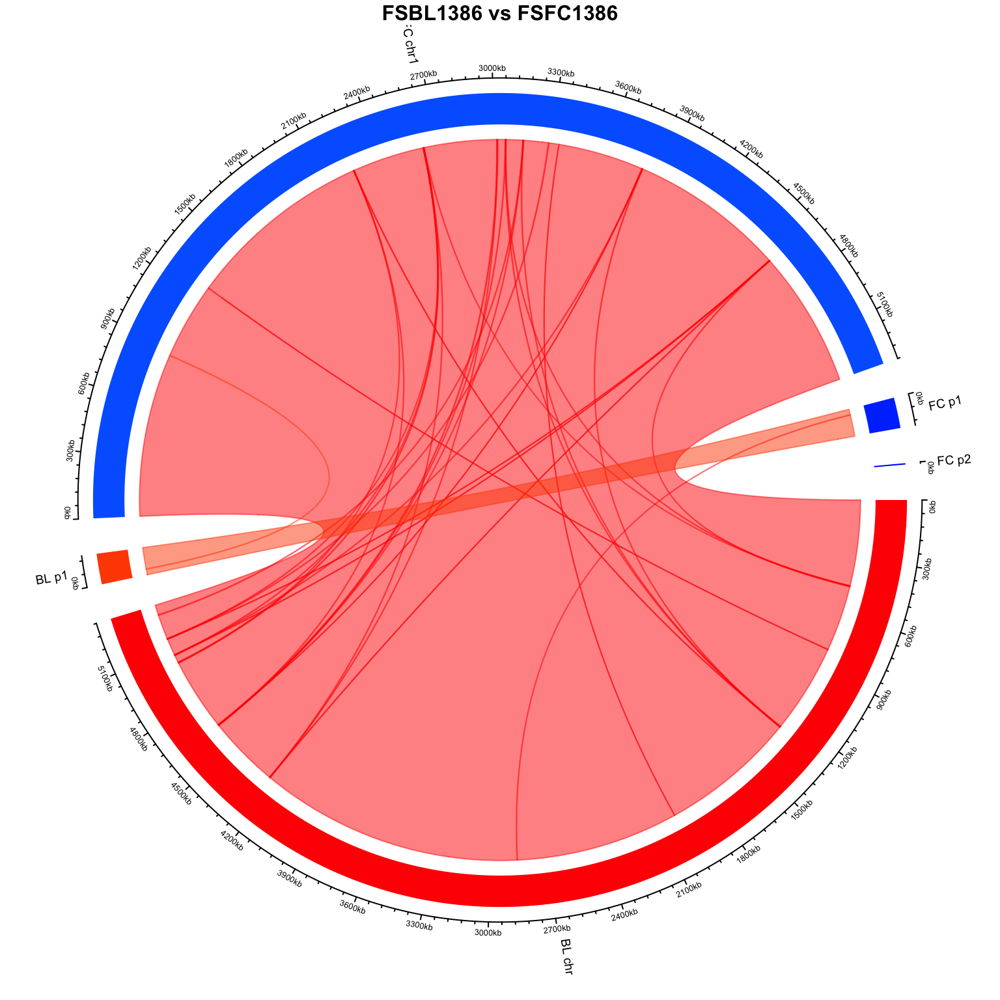

# Check fasta headings
grep "^>" *.fasta
# For single files
sed -E 's/^(>[^ ]+) .* (chromosome|plasmid [^,]+).*/>\2/' FSBL1386.fasta | sed -E 's/ /_/g; s/^>/>FSBL1386_/' > FSBL1386.fasta
sed -E 's/^(>[^ ]+) .* (chromosome|plasmid [^,]+).*/>\2/' FSFC1386.fasta | sed -E 's/ /_/g; s/^>/>FSFC1386_/' > FSFC1386.fasta
# For multiple files
for file in *.fasta; do
base=$(basename "$file" .fasta)
sed -E 's/^(>[^ ]+) .* (chromosome|plasmid [^,]+).*/>\2/' "$file" | \
sed -E "s/ /_/g; s/^>/>${base}_/" > "${base}.fasta"
done
# Check fasta headings again
grep "^>" *.fasta4: Circular Whole Genome Comparison
Introduction
This tutorial will take two genome sequences and run a blastn comparison then visualise the comparison as a circlize output
This workflow involves using BLAST for sequence alignment, parsing the results, and visualizing the differences using circlize in R.
For a more in-depth tutorial on circular whole genome comparison see my circular genome comparisons github repo.
Part 1 - Genome download and comparison in bash
1.1: Download reads and run assemblies
1.2: Download reads and run assemblies
You should now have the following files which we cna use for the tutorial
FSBL1386_hybracter.fastaFSFC1386_hybracter.fasta
1.3: Rename all contig headers i.e. everything after the “>”
Pattern breakdown:
- ^(>[^ ]+) → Captures the initial sequence identifier (e.g., >NZ_CP102708.1).
- .* (chromosome|plasmid [^,]+) → Captures the desired terms:
- chromosome (single word).
- plasmid [^,]+ (the full plasmid name before a comma or end of the line).
\2 → Replaces the header with the extracted part.
Second sed step: * s/ //g → Replaces spaces with underscores. * s/^>/>9A-3-9/ → Adds the prefix to all headers.
Note: this pattern is specific to these fasta files, use a different syntax for different headers
1.4: Install seqkit
Make sure you have seqkit installed. You can download it from Wei Shen’s Github page.
1.5: Use seqkit to get contig length
seqkit fx2tab -n -l FSBL1386_hybracter.fasta > FSBL1386_lengths.tsv
seqkit fx2tab -n -l FSFC1386_hybracter.fasta > FSFC1386_lengths.tsv1.6: Install BLAST
Make sure you have BLAST installed. You can download it from the NCBI BLAST website.
1.7: Use BLAST to align the sequences
Use BLAST to align the sequences in the FASTA files.
# Define your reference and query genomes
REF=FSFC1386_hybracter.fasta
Q= FSBL1386_hybracter.fasta
# Check your reference and query genomes
$REF
$Q
# Create BLAST databases for both genomes
makeblastdb -in ${REF} -dbtype nucl -out ${REF}_db
makeblastdb -in ${Q} -dbtype nucl -out ${Q}_db
# Perform QAST to compare genome1 to genome2
blastn -query ${REF} -db ${Q}_db -out ${REF}_vs_${Q}.blastn -outfmt 6
# Perform BLAST to compare genome2 to genome1
blastn -query ${Q} -db ${REF}_db -out ${Q}_vs_${REF}.blastn -outfmt 6Part 2 - Visulisation with circulize in R
2.1: Parse the BLAST results to get the alignments
Parse BLAST Results
Parse the BLAST results to get the alignments.
# Load necessary libraries
library(Biostrings)
library(dplyr)
library(circlize)
library(colorspace)
parse_blast <- function(blast_file) {
blast_data <- read.table(blast_file, header = FALSE, stringsAsFactors = FALSE)
colnames(blast_data) <- c("qseqid", "sseqid", "pident", "length", "mismatch",
"gapopen", "qstart", "qend", "sstart", "send",
"evalue", "bitscore")
return(blast_data)
}
blast_data <- parse_blast("BLAST_data/FSBL1386_vs_FSFC1386.blastn")
blood = "FSBL1386"
faecal = "FSFC1386"
head(blast_data) qseqid sseqid pident length mismatch
1 FSBL1386_chromosome00001 FSFC1386_chromosome00001 100.000 3341929 0
2 FSBL1386_chromosome00001 FSFC1386_chromosome00001 100.000 1998734 0
3 FSBL1386_chromosome00001 FSFC1386_chromosome00001 98.864 5548 43
4 FSBL1386_chromosome00001 FSFC1386_chromosome00001 98.864 5548 43
5 FSBL1386_chromosome00001 FSFC1386_chromosome00001 99.661 5316 16
6 FSBL1386_chromosome00001 FSFC1386_chromosome00001 99.661 5316 16
gapopen qstart qend sstart send evalue bitscore
1 0 1999234 5341162 1 3341929 0 6171000
2 0 1 1998734 3341930 5340663 0 3691000
3 18 5152335 5157877 2247379 2252911 0 9878
4 18 4246612 4252144 3153102 3158644 0 9878
5 2 5015767 5021081 2629611 2634925 0 9716
6 2 4628844 4634158 3016534 3021848 0 97162.2: Get genome lengths from seqkit table
# Load necessary libraries
library(dplyr)
# Read contig lengths from the seqkit output
contig_lengths_ref <- read.table("BLAST_data/FSBL1386_lengths.tsv", header = FALSE, sep = "\t", stringsAsFactors = FALSE)
contig_lengths_q <- read.table("BLAST_data/FSFC1386_lengths.tsv", header = FALSE, sep = "\t", stringsAsFactors = FALSE)
contig_lengths = rbind(contig_lengths_ref, contig_lengths_q)
colnames(contig_lengths) <- c("chr", "length")
# Inspect the data
head(contig_lengths) chr
1 FSBL1386_chromosome00001 len=5341162 circular=true
2 FSBL1386_plasmid00001 length=143420 plasmid_copy_number_short=0.9x plasmid_copy_number_long=0.49x circular=true
3 FSFC1386_chromosome00001 len=5340663
4 FSFC1386_plasmid00001 length=143423 plasmid_copy_number_short=0.56x plasmid_copy_number_long=3.34x circular=true
5 FSFC1386_plasmid00002 length=6415 plasmid_copy_number_short=11.89x plasmid_copy_number_long=0.0x circular=true
length
1 5341162
2 143420
3 5340663
4 143423
5 6415# Update genome length table with actual contig sizes
genome_lengths <- contig_lengths %>%
dplyr::mutate(start = 0, end = length) %>%
dplyr::select(chr, start, end)
# Add dummy numeric column as before
genome_lengths$value <- 12.3: Rename genome lengths
# rename to make contigs simpler
genome_lengths$chr = gsub("chromosome0000", "chr", genome_lengths$chr)
genome_lengths$chr <- gsub("plasmid0000", "p", genome_lengths$chr)
genome_lengths$chr <- gsub("FS", "", genome_lengths$chr)
genome_lengths$chr <- gsub("_", " ", genome_lengths$chr)
genome_lengths$chr <- gsub("1386", "", genome_lengths$chr)
# Remove anything after "len=" or "length="
genome_lengths$chr <- gsub("(len(gth)?).*", "", genome_lengths$chr)
genome_lengths$chr <- gsub("(?<=\\d)\\s", "", genome_lengths$chr, perl = TRUE)
# Check final genome lengths table
print(genome_lengths$chr)[1] "BL chr1" "BL p1" "FC chr1" "FC p1" "FC p2" 2.4: Rename BLAST data
# rename to make contigs simpler
blast_data$qseqid = gsub("chromosome0000", "chr", blast_data$qseqid)
blast_data$qseqid <- gsub("plasmid0000", "p", blast_data$qseqid)
blast_data$qseqid <- gsub("FS", "", blast_data$qseqid)
blast_data$qseqid <- gsub("_", " ", blast_data$qseqid)
blast_data$qseqid <- gsub("1386", "", blast_data$qseqid)
# rename to make contigs simpler
blast_data$sseqid = gsub("chromosome0000", "chr", blast_data$sseqid)
blast_data$sseqid <- gsub("plasmid0000", "p", blast_data$sseqid)
blast_data$sseqid <- gsub("FS", "", blast_data$sseqid)
blast_data$sseqid <- gsub("_", " ", blast_data$sseqid)
blast_data$sseqid <- gsub("1386", "", blast_data$sseqid)2.5: Filter the BLAST results based on percentage identity and length
For percentage identity: you can define a number e.g. 99.5% is f_pc_ident = 99.5
For minimum length: you can define number of bp e.g. 1500bp is f_length = 1500 or the % of the smallest contig e.g. 60% of the smallest contig is f_length = (min(60*(genome_lengths$end)))
f_pc_ident = 99.5
f_length = 1500
blast_data = blast_data %>% filter(pident >= f_pc_ident & length > f_length)2.6: Adding colour to plot
# Define colors for specific sequences
# here blood isolates are shades of red and faecal are shades of blue
# Separate the genome lengths into two groups based on the "chr" name
blue_genomes <- genome_lengths$chr[grep("FC", genome_lengths$chr)]
red_genomes <- genome_lengths$chr[grep("BL", genome_lengths$chr)]
# Assign shades of blue for faecal genomes and shades of red for blood genomes
blue_colors <- setNames(rainbow(length(blue_genomes), start = 0.6, end = 0.65), blue_genomes)
red_colors <- setNames(rainbow(length(red_genomes), start = 0, end = 0.05), red_genomes)
# Combine the two color sets
colors <- c(blue_colors, red_colors)
# Check the resulting colors
print(colors) FC chr1 FC p1 FC p2 BL chr1 BL p1
"#0066FF" "#0040FF" "#0019FF" "#FF0000" "#FF4D00" 2.7: Visualize with circlize
# Clear previous plots
circos.clear()
circos.par(gap.degree = 5)
# Initialize the genome data
circos.genomicInitialize(genome_lengths, plotType = "axis")
# Add a new track with different colors for each chromosome
circos.genomicTrackPlotRegion(genome_lengths, panel.fun = function(region, value, ...) {
sector.index <- get.cell.meta.data("sector.index")
col <- colors[sector.index]
circos.genomicRect(region, value, col = col, border = NA)
}, bg.border = NA, track.height = 0.1, ylim = c(0, 1))
# Add custom sector labels with rotation
circos.track(track.index = 1, panel.fun = function(x, y) {
sector.index <- get.cell.meta.data("sector.index")
xcenter <- get.cell.meta.data("xcenter")
circos.text(
x = xcenter,
y = get.cell.meta.data("ylim")[1],
labels = sector.index,
facing = "reverse.clockwise",
niceFacing = TRUE,
adj = c(1.5, 0.5),
cex = 0.6
)
}, bg.border = NA)
# Plot the connections with specific colors
for (i in 1:nrow(blast_data)) {
query_seq <- blast_data$qseqid[i]
color <- colors[query_seq]
circos.genomicLink(
region1 = data.frame(chr = blast_data$qseqid[i], start = blast_data$qstart[i], end = blast_data$qend[i]),
region2 = data.frame(chr = blast_data$sseqid[i], start = blast_data$sstart[i], end = blast_data$send[i]),
col = adjustcolor(color, alpha.f = 0.5)
)
}
# Add a title to the plot with increased text size
title(paste0(blood, " ", "vs", " ", faecal), cex.main = 1)